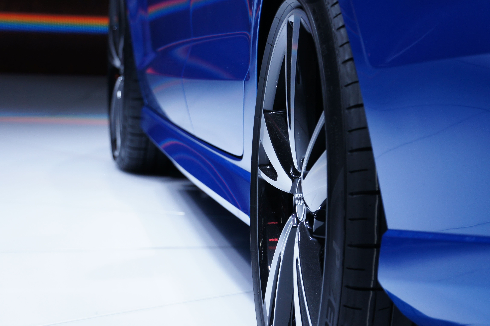

Image de fond : assets/header-journal-restitution-leasing.jpg
assets/journal-restitution-leasing.jpgÀ la fin d'une location avec option d'achat ou d'une location longue durée, le véhicule est inspecté par un expert mandaté par le loueur. Son rapport détermine les frais de remise en état qui vous seront refacturés. Beaucoup de conducteurs découvrent la facture au dernier moment, alors qu'une partie était évitable.
Ce qu'un nettoyage change réellement
Un véhicule sale n'est pas seulement mal noté sur la propreté : il est mal inspecté. Une moquette tachée, des plastiques poussiéreux et des vitres opaques donnent le ton du rapport, et l'expert regarde le reste avec plus d'attention. À l'inverse, un intérieur impeccable oriente favorablement l'ensemble de l'évaluation.
Concrètement, un nettoyage sérieux avant restitution agit sur :
- Les taches sur sièges et moquettes, qui relèvent de la remise en état facturable et non de l'usure normale.
- Les odeurs persistantes (tabac, animaux), souvent facturées séparément.
- Les plastiques et le tableau de bord, où l'accumulation passe pour de la négligence.
- Les optiques de phares voilées, considérées comme un défaut d'entretien et non comme de l'usure.
- Les jantes encrassées, qui masquent parfois de simples traces de poussière de frein prises pour des dommages.
Ce qu'un nettoyage ne changera pas
Autant être clair : le nettoyage n'est pas de la carrosserie. Il ne fera rien pour un impact sur le pare-brise, une jante rayée sur un trottoir, une bosse de portière, une déchirure de sellerie ou des pneus sous la limite légale. Ces postes suivent la grille d'usure du loueur et se règlent, le cas échéant, avec un carrossier.
De même, les micro-rayures profondes qui atteignent le vernis ne se corrigent pas entièrement à la machine en une passe. Un polissage améliore l'aspect général et gomme le voile terne, mais ne fait pas disparaître un rayure qui accroche l'ongle.
La bonne question n'est pas « est-ce que ça va tout effacer », mais « est-ce que le coût du nettoyage est inférieur aux frais de remise en état que j'éviterai ». Dans la majorité des cas, oui.
Quand s'y prendre
Idéalement entre huit et quinze jours avant la date de restitution. Assez tôt pour que les textiles soient parfaitement secs et que les odeurs soient dissipées, assez tard pour que le véhicule n'ait pas le temps de se resalir.
Si vous voulez contester un poste du rapport, prenez vos propres photos datées juste après le nettoyage. Elles vous serviront de référence.
Et pour les flottes
Le raisonnement vaut à plus grande échelle pour les entreprises qui restituent plusieurs véhicules à la même échéance. Traiter un lot de véhicules avant le passage de l'expert coûte moins cher au véhicule et évite des refacturations qui se cumulent. Nous intervenons directement sur le parc.
On s'occupe de votre voiture ?
Lavage à domicile en Alsace, sur rendez-vous 7j/7.